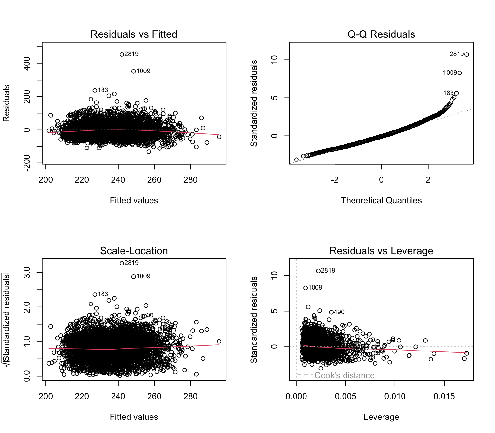

library(tidyverse)
library(rsample)
library(this.path)
setwd(this.dir())
framingham <- read_csv("../../data/framingham.csv") |>
filter(!is.na(totChol), !is.na(age), !is.na(BMI), !is.na(sysBP),
!is.na(diaBP), !is.na(cigsPerDay), !is.na(glucose),
!is.na(heartRate)) |>
mutate(
male = factor(male, levels = c(0,1), labels = c("Female","Male")),
currentSmoker = factor(currentSmoker, levels = c(0,1), labels = c("Non-smoker","Smoker")),
prevalentHyp = factor(prevalentHyp, levels = c(0,1), labels = c("No","Yes")),
diabetes = factor(diabetes, levels = c(0,1), labels = c("No","Yes")),
TenYearCHD = factor(TenYearCHD, levels = c(0,1), labels = c("No","Yes")),
education = factor(education, levels = 1:4,
labels = c("Some HS","HS Diploma","Some College","College Degree"))
)Day 7 (PM) Lab: Model Selection and Cross-Validation
SC INBRE Biostatistics Summer Intensive 2026
1 Overview
This lab puts the Day 7 morning material into practice. You will work through the full model selection workflow — from comparing candidate models with AIC/BIC, to automated stepwise selection, to cross-validation — using the Framingham Heart Study dataset.
How this lab works:
- Part 1 (instructor demo, ~20 min): Follow along as the instructor builds a model for total cholesterol using the complete model selection workflow.
- Part 2 (on your own, ~90 min): Six exercises. Create a new
.qmdfile, work through each exercise, render when done.
The Quick Reference Card in Section 3 has the key functions.
2 Part 1: Instructor Demo
2.1 Setup
2.2 Goal: Predict Total Cholesterol
We want to build a model predicting totChol from available continuous and categorical predictors. This is a different outcome from what we used this morning (sysBP), so students see the workflow applied to a fresh problem.
2.3 Step 1: Candidate Models
m_small <- lm(totChol ~ age, data = framingham)
m_medium <- lm(totChol ~ age + BMI + male, data = framingham)
m_large <- lm(totChol ~ age + BMI + male + sysBP + diaBP + cigsPerDay +
glucose + heartRate + currentSmoker, data = framingham)2.4 Step 2: Compare with AIC and BIC
AIC(m_small, m_medium, m_large) df AIC
m_small 3 39420.16
m_medium 5 39378.05
m_large 11 39319.56BIC(m_small, m_medium, m_large) df BIC
m_small 3 39438.89
m_medium 5 39409.27
m_large 11 39388.232.5 Step 3: Stepwise Selection
m_step <- step(m_large, direction = "both", trace = 0)
summary(m_step)
Call:
lm(formula = totChol ~ age + BMI + male + sysBP + diaBP + cigsPerDay +
heartRate, data = framingham)
Residuals:
Min 1Q Median 3Q Max
-132.89 -28.40 -3.34 24.72 454.00
Coefficients:
Estimate Std. Error t value Pr(>|t|)
(Intercept) 115.57728 7.47944 15.453 < 2e-16 ***
age 1.20450 0.09040 13.324 < 2e-16 ***
BMI 0.54625 0.18510 2.951 0.003186 **
maleMale -6.94366 1.51298 -4.589 4.59e-06 ***
sysBP 0.11519 0.05524 2.085 0.037106 *
diaBP 0.20110 0.09795 2.053 0.040125 *
cigsPerDay 0.17746 0.06318 2.809 0.004999 **
heartRate 0.22539 0.05998 3.758 0.000174 ***
---
Signif. codes: 0 '***' 0.001 '**' 0.01 '*' 0.05 '.' 0.1 ' ' 1
Residual standard error: 42.53 on 3794 degrees of freedom
Multiple R-squared: 0.0977, Adjusted R-squared: 0.09604
F-statistic: 58.69 on 7 and 3794 DF, p-value: < 2.2e-16AIC(m_large, m_step) df AIC
m_large 11 39319.56
m_step 9 39315.662.6 Step 4: Cross-Validate the Finalists
set.seed(123)
folds <- vfold_cv(framingham, v = 5)
cv_mse <- function(formula, folds) {
mse_vals <- map_dbl(folds$splits, function(split) {
train <- analysis(split)
test <- assessment(split)
model <- lm(formula, data = train)
preds <- predict(model, newdata = test)
mean((test$totChol - preds)^2)
})
tibble(mean_mse = mean(mse_vals), sd_mse = sd(mse_vals))
}
bind_rows(
cv_mse(formula(m_small), folds) |> mutate(model = "Small (age)"),
cv_mse(formula(m_medium), folds) |> mutate(model = "Medium"),
cv_mse(formula(m_step), folds) |> mutate(model = "Stepwise"),
cv_mse(formula(m_large), folds) |> mutate(model = "Large (full)")
) |>
select(model, mean_mse, sd_mse) |>
arrange(mean_mse)# A tibble: 4 × 3
model mean_mse sd_mse
<chr> <dbl> <dbl>
1 Stepwise 1814. 177.
2 Large (full) 1816. 179.
3 Medium 1841. 193.
4 Small (age) 1862. 184.2.7 Step 5: Diagnostics on the Final Model
par(mfrow = c(2, 2))
plot(m_step)
par(mfrow = c(1, 1))The workflow in five steps: candidate models → AIC/BIC → stepwise → CV → diagnostics. This is the same template from this morning, applied to a new outcome.
3 Part 2: Exercises
3.1 Instructions
Step 1. Open a new Quarto document: File → New File → Quarto Document. Title it "Day 7 Lab: Model Selection", select HTML, click Create.
Step 2. Replace the template content with this YAML and setup chunk:
---
title: "Day 7 Lab: Model Selection and Cross-Validation"
subtitle: "SC INBRE Biostatistics Summer Intensive 2026"
date: today
format:
html:
toc: true
theme: cosmo
execute:
echo: true
warning: false
message: false
---
```{r}
library(tidyverse)
library(rsample)
library(this.path)
setwd(this.dir())
framingham <- read_csv("../../data/framingham.csv") |>
filter(!is.na(sysBP), !is.na(age), !is.na(BMI), !is.na(totChol),
!is.na(diaBP), !is.na(cigsPerDay), !is.na(glucose),
!is.na(heartRate)) |>
mutate(
male = factor(male, levels = c(0,1), labels = c("Female","Male")),
currentSmoker = factor(currentSmoker, levels = c(0,1), labels = c("Non-smoker","Smoker")),
prevalentHyp = factor(prevalentHyp, levels = c(0,1), labels = c("No","Yes")),
diabetes = factor(diabetes, levels = c(0,1), labels = c("No","Yes")),
TenYearCHD = factor(TenYearCHD, levels = c(0,1), labels = c("No","Yes")),
education = factor(education, levels = 1:4,
labels = c("Some HS","HS Diploma","Some College","College Degree"))
)
```Step 3. Work through Exercises 1–6 in order. For each one, add a code chunk and 2–3 sentences describing what you found.
Step 4. Render (Ctrl+Shift+K / Cmd+Shift+K) when finished.
Tip
Check the Quick Reference Card in Section 3 before asking for help. The most common issues are: (1) comparing AIC across models fit on different subsets of the data (this is invalid — all models must use the same rows), and (2) forgetting set.seed() before cross-validation (results will change each run).
Note
Exercises 1–4 cover the core material. Exercise 5 requires combining CV with model comparison in a single analysis. Exercise 6 is a challenge that brings in Day 6 material (non-linear terms). Don’t worry if you don’t reach it.
Exercise 1 — AIC and BIC Basics.
Build four models predicting sysBP:
- Model A:
sysBP ~ age - Model B:
sysBP ~ age + BMI - Model C:
sysBP ~ age + BMI + diaBP - Model D:
sysBP ~ age + BMI + diaBP + totChol + cigsPerDay + glucose
Compute the \(R^2\) of each model. Does \(R^2\) always increase? Create a simple plot of \(R^2\) vs. the number of predictors.
Compute AIC and BIC for all four models using
AIC()andBIC(). Which model does AIC prefer? Which does BIC prefer? Do they agree?Compute the \(\Delta\)AIC for each model relative to the best. Which models are within 2 AIC units of the best (i.e., essentially equivalent)?
In 2–3 sentences, explain why \(R^2\) and AIC can disagree about which model is best.
# your code hereExercise 2 — Stepwise Selection.
Fit the full model:
sysBP ~ age + BMI + totChol + cigsPerDay + glucose + diaBP + heartRate + male + currentSmoker. Runstep()withdirection = "both"andtrace = 1. Watch the output carefully — which predictors are considered at each step? Which are dropped?Run
step()again withdirection = "forward"starting from the intercept-only model. Use thescopeargument to define the search space (see the morning .qmd for the syntax). Does forward selection give the same result as stepwise?Run
step()withdirection = "backward". Does it agree with the other two?Create a summary table comparing the three selected models: their formulas, AIC values, and \(R^2\). If they differ, which would you choose and why?
# your code hereExercise 3 — Formally Comparing Nested Models.
Using the stepwise-selected model from Exercise 2 as your “reduced” model and the full model as your “full” model:
Use
anova(reduced, full)to run a partial F-test. Is the full model significantly better than the stepwise model?Report the p-value and interpret it in one sentence.
Report
AIC()for both models. Does the AIC comparison agree with the F-test? Should it?Based on these comparisons, which model would you report as your final model and why?
# your code hereExercise 4 — Cross-Validation from Scratch.
Assign each observation in the Framingham data to one of 5 folds using
sample(rep(1:5, length.out = n)). Remember to useset.seed()for reproducibility.Write a
forloop that implements 5-fold CV for a single model. For each fold: fit the model on the training data (folds \(\neq k\)), predict the test data (fold \(= k\)), and compute the MSE. Store the 5 MSE values in a vector.Apply your loop to three models:
sysBP ~ agesysBP ~ age + BMI + diaBP- The stepwise-selected model from Exercise 2
Report the mean CV-MSE and standard deviation for each.
Which model has the lowest CV error? Is this the same model that AIC preferred in Exercise 1? Explain in 1–2 sentences.
Create a plot showing the mean CV-MSE for each model with error bars (\(\pm\) 1 standard deviation). Use
geom_point()andgeom_errorbar().
# your code hereExercise 5 — The Full Workflow.
Build the best model you can for predicting diaBP (diastolic blood pressure) — a different outcome from what we have been using. Apply the complete workflow:
Check variable form: Use
pivot_longer()andfacet_wrap()with loess smoothers to inspect the relationship betweendiaBPand each candidate continuous predictor (age,BMI,sysBP,totChol,cigsPerDay,glucose,heartRate). Which predictors show a clear relationship?Fit a full model using all the predictors you identified plus
maleandcurrentSmokeras categorical predictors.Run stepwise selection with
step(). Report the selected model.Cross-validate the full model, the stepwise model, and a small model of your choosing using 5-fold CV with
rsample::vfold_cv(). Report mean CV-MSE and SD for each.Run diagnostics on your final chosen model. Are there any concerns?
Report and interpret the coefficients and 95% confidence intervals of the final model. For each predictor, write one sentence explaining what the coefficient means in clinical terms.
# your code hereExercise 6 (Challenge) — Non-Linear Terms and Model Selection.
This exercise combines Day 6 material (non-linear variable form) with Day 7 model selection.
Recall from the Day 6 lab that
glucosemay have a non-linear relationship with blood pressure. Fit two competing models forsysBP:m_linear:sysBP ~ age + BMI + diaBP + glucosem_spline:sysBP ~ age + BMI + diaBP + splines::ns(glucose, df = 3)
Compare them with AIC. Does the spline term for glucose improve the model?
Now add
heartRateto both models and repeat the AIC comparison. Does the answer change onceheartRateis in the model?Cross-validate both the linear and spline versions (with
heartRate) using 5-fold CV. Report mean CV-MSE and SD for each. Does CV agree with AIC?Apply stepwise selection to the spline model. Does
step()keep the spline term? Note:step()treatsns(glucose, df = 3)as a single block — it either keeps all the spline terms or drops them all.Run diagnostics on the better-fitting model. Compare the Residuals vs. Fitted plot to the linear version. Does allowing non-linearity in glucose reduce any patterning in the residuals?
Based on everything above, write a 3–4 sentence paragraph summarizing your final model choice and justification — as if this were the methods section of a short paper.
# your code here4 Quick Reference Card
4.1 Information Criteria
| Function | What it does |
|---|---|
AIC(m1, m2, m3) |
Compare models by AIC — lower is better |
BIC(m1, m2, m3) |
Compare models by BIC — lower is better, stronger penalty |
Interpreting \(\Delta\)AIC: \(<2\) = equivalent; \(2\)–\(10\) = some evidence; \(>10\) = strong evidence.
Key rule: AIC/BIC can only compare models fit on the same data (same rows, same outcome).
4.2 Stepwise Selection
# Stepwise (both directions) --- recommended default
step(full_model, direction = "both", trace = 0)
# Forward selection --- start from intercept
model_null <- lm(y ~ 1, data = df)
step(model_null,
scope = list(lower = model_null, upper = full_model),
direction = "forward", trace = 0)
# Backward elimination --- start from full model
step(full_model, direction = "backward", trace = 0)4.3 Comparing Nested Models
# Partial F-test: does the full model improve over the reduced?
anova(model_reduced, model_full)4.4 Cross-Validation (Manual)
set.seed(42)
n <- nrow(df)
df$fold <- sample(rep(1:5, length.out = n))
mse_per_fold <- numeric(5)
for (k in 1:5) {
train <- df[df$fold != k, ]
test <- df[df$fold == k, ]
model <- lm(y ~ x1 + x2, data = train)
preds <- predict(model, newdata = test)
mse_per_fold[k] <- mean((test$y - preds)^2)
}
mean(mse_per_fold) # CV-MSE
sd(mse_per_fold) # SD across folds4.5 Cross-Validation (with rsample)
library(rsample)
set.seed(42)
folds <- vfold_cv(df, v = 5)
mse_vals <- map_dbl(folds$splits, function(split) {
train <- analysis(split)
test <- assessment(split)
model <- lm(y ~ x1 + x2, data = train)
preds <- predict(model, newdata = test)
mean((test$y - preds)^2)
})
mean(mse_vals) # CV-MSE
sd(mse_vals) # SD across folds4.6 Error Bar Plot for CV Results
results |>
ggplot(aes(x = model, y = mean_mse)) +
geom_point(size = 3) +
geom_errorbar(aes(ymin = mean_mse - sd_mse,
ymax = mean_mse + sd_mse), width = 0.2)4.7 Useful Reminders
- Always use
set.seed()before any CV so results are reproducible AIC()andBIC()require models fit on the same rows — filter NAs firststep()withtrace = 0suppresses output;trace = 1shows the algorithm- When AIC and CV agree, you can be confident; when they disagree, trust CV
- After model selection, always run diagnostics on the final model (Day 6 workflow)